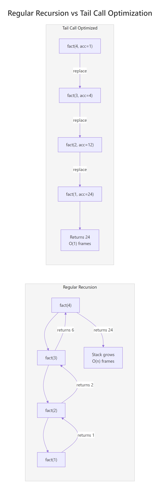

Tail Call Optimization in R: Recursive Functions Without Stack Overflow
Tail call optimization (TCO) lets a recursive function reuse its current stack frame instead of adding a new one for each call — so your recursion runs in constant memory and never hits R's stack limit. R 4.4+ supports this natively with Tailcall(), and older versions can achieve the same effect with trampolines or accumulator rewrites.
Why does recursion hit a stack limit in R?
Every recursive call in R adds a frame to the call stack. Call yourself enough times and R crashes with "C stack usage is too close to the limit." Let's see this happen with a simple countdown function.
R printed "done!" for countdown(10) — just 10 stack frames, no problem. But at n = 10000, each call stacks on top of the last until R's memory limit is hit. The exact limit varies by system (typically 1,000 to 10,000 frames), but the crash is always the same.
To see the stack growing, let's peek inside a smaller recursion with sys.nframe(), which returns the current depth of the call stack.
Each call pushes one more frame onto the stack. Five calls, five frames. Ten thousand calls, ten thousand frames — and the stack runs out of space.
Try it: Write a recursive function ex_sum_to(n) that returns the sum of integers from 1 to n (e.g., ex_sum_to(5) returns 15). Test it with n = 5.
Click to reveal solution
Explanation: Each call adds n to the result of ex_sum_to(n - 1) until the base case returns 1. This works for small n but would crash for large values because n + ex_sum_to(n - 1) means the addition happens after the recursive call returns — R must keep every frame alive.
What makes a function tail-recursive?
A function is tail-recursive when the recursive call is the very last thing it does — nothing happens after the call returns. This distinction matters because only tail-recursive functions can be optimized to reuse their stack frame.
Let's compare two versions of factorial. First, the standard (non-tail-recursive) version.
The line n * factorial_bad(n - 1) means R can't discard the current frame — it needs to stick around so it can multiply n by whatever the recursive call returns. Every frame waits for the one below it.
Now here's the tail-recursive version. The trick is to move the multiplication into a parameter called an accumulator.
Both produce 3628800, but the second version carries the running product forward in acc. When factorial_acc(n - 1, acc * n) returns, there's nothing left to do — the current frame is truly finished. That's what makes it eligible for tail call optimization.
Try it: The function ex_power(base, exp) below is NOT tail-recursive. Rewrite it with an accumulator parameter so the recursive call is the last operation.
Click to reveal solution
Explanation: Instead of multiplying after the recursive call returns, we multiply into acc before making the call. The result travels forward, not backward.
How does Tailcall() work in base R?
R 4.4.0 introduced Tailcall(), a base R function that tells the interpreter: "replace my current stack frame with this new call." No packages needed — just wrap your recursive call in Tailcall() and R handles the rest.
Tailcall(factorial_tc, n - 1, acc * n) does the same thing as factorial_tc(n - 1, acc * n), but instead of pushing a new frame, it replaces the current one. The stack stays at depth 1 no matter how deep the recursion goes.
Let's also fix our crashing countdown from the first section.
The function is identical in structure to our original countdown, but wrapping the recursive call in Tailcall() keeps the stack flat.
traceback() won't show replaced frames. This makes debugging harder — if something goes wrong inside deep recursion, you'll only see the last call, not the chain that led to it.R.version.string. If you're on an older version, the trampoline pattern (next section) gives you the same stack safety on any R version.Try it: Write a function ex_count_digits(n, acc = 0) that counts how many digits are in a positive integer using Tailcall(). Hint: repeatedly divide by 10 until n reaches 0.
Click to reveal solution
Explanation: Each call strips the last digit via integer division (%/% 10) and increments the counter. Tailcall() ensures no stack growth even for numbers with millions of digits.
What is the trampoline pattern and when should you use it?
A trampoline wraps recursion in a while loop. Instead of calling itself directly, the function returns a description of the next call (a "thunk"). The loop keeps evaluating thunks until a final value appears. This works on any R version with no special functions — just 8 lines of setup.
Here's a minimal trampoline implementation based on Jim Hester's elegant pattern.
trampoline() wraps a function so that instead of recursing directly, it checks: "did the function return a recur() object?" If yes, call again with those arguments. If no, we're done. The while loop replaces the call stack.
Now let's use it for factorial.
factorial_tramp(5000) returns Inf (the number is too large for R's double-precision floating point), but it doesn't crash — the stack stays flat because the while loop does all the iteration.
The trampoline really shines with mutual recursion, where two functions call each other. Here's a classic: checking whether a number is even or odd using only subtraction by 1.
Each function returns a zero-argument function (a thunk) instead of calling the other directly. The trampoline loop evaluates thunks until it gets a non-function value. No stack growth, no matter how large the number.
recur() or thunk returns.Try it: Use the trampoline and recur functions defined above to write a ex_collatz(n, steps = 0) function that counts how many steps it takes to reach 1 in the Collatz sequence (if even, divide by 2; if odd, multiply by 3 and add 1).
Click to reveal solution
Explanation: The Collatz sequence starting at 27 takes 111 steps to reach 1. Without the trampoline, this would require 111 stack frames — manageable here, but some starting values need thousands of steps.
How do you choose between Tailcall(), trampolines, and loops?
Each approach has trade-offs. Let's compare them on the same problem: summing integers from 1 to n.
All three return 5050. The difference is in performance and portability. Here's a decision matrix to help you choose.
| Approach | R Version | Stack Usage | Speed | Readability | Mutual Recursion |
|---|---|---|---|---|---|
| Regular recursion | Any | O(n) — crashes | Fast | High | Yes |
| Accumulator only | Any | Still O(n) without TCO | Fast | Medium | No |
Tailcall() |
4.4+ | O(1) | Fast | High | Limited |
| Trampoline | Any | O(1) | Slower (overhead) | Medium | Yes |
| Plain loop | Any | O(1) | Fastest | Lower | No |
Tailcall() for simplicity. For performance-critical hot paths where readability matters less, write a plain loop. And remember: R's vectorized operations like sum(1:n) are almost always faster than any of these.Try it: You're writing a tree-traversal function on R 4.2 where two functions call each other (process a node, then process its children). Which approach would you use: Tailcall(), a trampoline, or a plain loop? Write your answer as a comment.
Click to reveal solution
Explanation: Trampolines are the only approach that supports mutual recursion on R < 4.4. The thunk-returning pattern lets two functions bounce between each other without growing the stack.
Practice Exercises
Exercise 1: Greatest Common Divisor with Tailcall()
Euclid's algorithm finds the greatest common divisor (GCD) of two numbers: if b is 0, the GCD is a; otherwise, the GCD of a and b is the GCD of b and a %% b. Implement this using Tailcall().
Click to reveal solution
Explanation: Euclid's algorithm is naturally tail-recursive — the recursive call gcd(b, a %% b) is already the last operation. Wrapping in Tailcall() lets it handle arbitrarily large inputs without stack overflow.
Exercise 2: Flatten a Nested List
Write a function that flattens an arbitrarily nested list into a single vector. Since list flattening branches into sublists, a manual stack-based approach (inspired by the trampoline idea of converting recursion to iteration) works best.
Click to reveal solution
Explanation: List flattening isn't purely tail-recursive (you branch into sublists), so a manual stack-based loop works best. We push list elements onto a stack and pop them off one at a time, collecting non-list values into the result.
Exercise 3: Binary Search with Tailcall()
Implement a binary search on a sorted vector using Tailcall(). The function should return the index of the target value, or NA if not found.
Click to reveal solution
Explanation: Binary search is naturally tail-recursive — each call narrows the search window without needing to do anything after the recursive call returns. Tailcall() ensures the stack stays flat even when searching through millions of elements.
Putting It All Together
Let's build something practical: a recursive string repeater that concatenates a string n times. We'll start with naive recursion, see it fail, convert to tail-recursive form, and then protect it with Tailcall().
The paste0() call wraps the recursion, so each frame must wait. Let's add an accumulator.
The structure is right, but plain R doesn't optimize it. Let's add Tailcall().
Three versions, same result for small inputs. But only the Tailcall() version survives at scale. The pattern is always the same: identify the pending work, move it into an accumulator, then wrap the recursive call in Tailcall().
Summary

Figure 1: Regular recursion grows the stack with each call (left), while tail call optimization reuses a single frame (right).
| Approach | R Version | Stack | Best For |
|---|---|---|---|
| Regular recursion | Any | O(n) — crashes at depth limit | Prototyping, small inputs only |
| Accumulator rewrite | Any | Still O(n) without TCO | Preparing code for Tailcall() |
Tailcall() |
4.4+ | O(1) | Production tail-recursive code |
| Trampoline | Any | O(1) | Pre-4.4 R, mutual recursion |
| Plain loop | Any | O(1) | Performance-critical hot paths |
Key takeaways:
- Recursion crashes when the call stack exceeds R's limit (typically 1,000 to 10,000 frames)
- Tail-recursive means the recursive call is the last operation — no pending work after it returns
- The accumulator pattern converts non-tail-recursive functions to tail-recursive by carrying results forward
- Tailcall() (R 4.4+) replaces the current stack frame, giving O(1) stack usage
- Trampolines achieve the same effect on any R version by converting recursion into a while loop
- For most R work, vectorized operations like
sum(),cumsum(), andReduce()are faster than any recursive approach
References
- R Core Team —
TailcallandExecdocumentation. Link - Wickham, H. — Advanced R, 2nd Edition. Chapter 6: Functions. Link
- Jumping Rivers — What's New in R 4.4.0. Link
- Hester, J. — Tail Recursion in R with Trampolines. Link
- Dinnager, R. — trampoline: Make Functions that Can Recurse Infinitely. Link
- Mailund, T. — tailr: Automatic Tail Recursion Optimisation. Link
- Wikipedia — Tail call. Link
Continue Learning
- Functional Programming in R — The parent guide covering closures, higher-order functions, and the functional mindset that makes tail recursion natural.
- Memoization in R — Another technique for making recursive functions efficient — cache results so you never compute the same subproblem twice.
- Reduce, Filter, Map in R — Base R's functional triad that often replaces explicit recursion entirely with cleaner, vectorized alternatives.